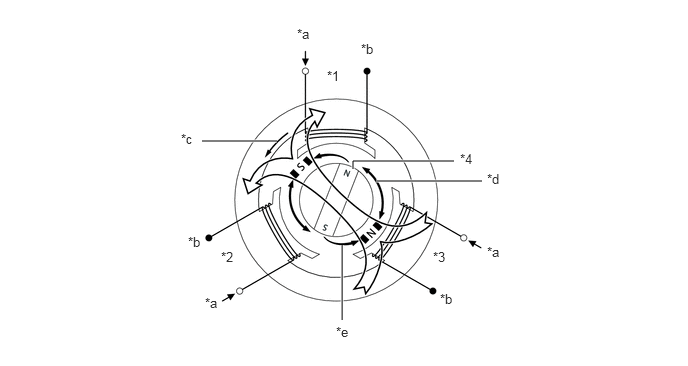
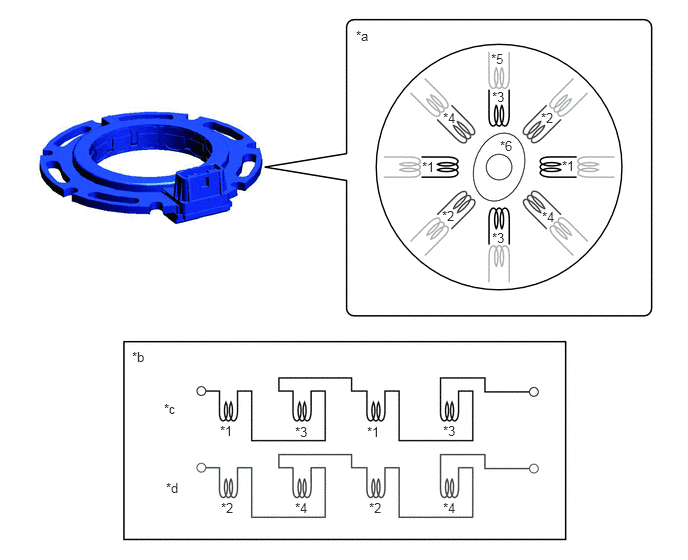
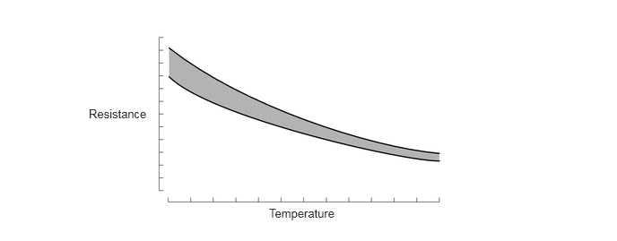

| Last Modified: 10-07-2025 | 6.11:8.1.0 | Doc ID: NM100000002MR8C |
| Model Year Start: 2024 | Model: Tacoma | Prod Date Range: [03/2024 - ] |
| Title: L580F (HYBRID TRANSMISSION / TRANSAXLE): HYBRID TRANSMISSION SYSTEM: MG; 2024 - 2026 MY Tacoma Tacoma HV [03/2024 - ] | ||
MG
CONSTRUCTION
(a) MG is compact, lightweight and highly efficient alternating current permanent magnet motors.
(b) MG charges the HV battery. In addition, by regulating the amount of electrical power generated (varying the generator's rpm), MG effectively controls of the transmission. MG also serves as the starter to start the engine.
(c) MG drives the rear wheels using electric power from the HV battery. In addition, it acts as a generator when decelerating to charge the HV battery.
(d) When a 3-phase alternating current is passed through the 3-phase windings of the stator coil, a rotating magnetic field is created in the electric motor. By controlling this rotating magnetic field in accordance with the rotor's rotational position and speed, the permanent magnets that are provided in the rotor become attracted by the rotating magnetic field, generating torque.
(e) The generated torque is for all practical purposes proportional to the amount of current, and the rotational speed is controlled by the frequency of the alternating current.
(f) Furthermore, a high level of torque, all the way to high speeds, can be generated efficiently by properly controlling the relationship of the rotating magnetic field to the angle of the rotor magnets.
(g) When the motor is used to generate electricity, the rotation of the rotor creates a rotating magnetic field, which creates current in the phases of the stator coils.
|
*1 |
Stator Coil (U Phase) |
*2 |
Stator Coil (V Phase) |
|
*3 |
Stator Coil (W Phase) |
*4 |
Rotor (Permanent Magnet) |
|
*a |
From Inverter with Converter Assembly |
*b |
Connected Internally in Motor |
|
*c |
Rotating Magnetic Field |
*d |
Repulsion |
|
*e |
Attraction |
- |
- |
(1) Resolver
- A resolver is an extremely reliable and compact sensor that precisely detects the magnetic pole position. Knowing the precise position of the magnetic poles of the motor rotor is indispensable for ensuring efficient control of MG. MG each have their own resolver.
- The stator of the resolver contains 3 types of coils: excitation coil A, detection coil S and detection coil C.
- The rotor of the resolver is oval, and the distance of the gap between the stator and the rotor varies with the rotation of the rotor.
- The flow of alternating current into excitation coil A results in the creation of a constant frequency magnetic field. Using this constant frequency magnetic field, coils S and C output values that correspond to the position of the rotor. Therefore, the Motor Generator ECU (MG ECU) detects the absolute position based on the difference between the coil S and coil C output values. Furthermore, the MG ECU calculates the rotational speed based on the amount of change in the position within a given length of time.
- The +S and -S pairs of the detection coil S are
staggered by 90 degrees. The +C and -C pairs are also
staggered in the same way. The C and S pairs of coils
are located 45 degrees from each other. 
*1
+S (Detection Coil S)
*2
+C (Detection Coil C)
*3
-S (Detection Coil S)
*4
-C (Detection Coil C)
*5
Excitation Coil A
*6
Rotor
*a
Image of Resolver Internal Construction
*b
Electrical Orientation of Resolver Coils
*c
Circuit of Detection Coil S
*d
Circuit of Detection Coil C
- Because the excitation coil of the resolver is provided with alternating current at a constant frequency, a constant frequency magnetic field is output to coils S and C, regardless of rotor speed. The magnetic field of the excitation coil is carried to coils S and C by the rotor. The rotor is oval, and the gap between the stator of the resolver and the rotor varies with the rotation of the rotor. Due to the variation of the gap, the peak values of the waveforms output by coils S and C vary in accordance with the position of the rotor.
- The MG ECU constantly monitors these peak values and connects them to form a virtual waveform. The MG ECU calculates the absolute position of the rotor from the difference between the values of coils S and C. The MG ECU determines the rotor direction based on the difference between the phases of the virtual waveform of coil S and the virtual waveform of coil C. Furthermore, the MG ECU calculates the rotational speed based on the amount of change in the rotor position within a given length of time.
- The diagrams below illustrate the waveforms that
are output at coils A, S and C when the rotor makes a
rotation of 180°:

(2) Temperature Sensor
- Temperature sensors are used to detect the temperature of the motor stators.
- The temperature sensor thermistor resistance changes in accordance with the change of the motor temperature. The resistance of the thermistor is high when the temperature of the motor is low. Conversely, when the motor temperature is high, the thermistor resistance will be low.
- When the temperature of a motor rises, motor
output is limited.
Characteristics of Temperature Sensor
